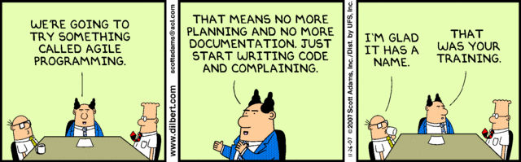

<!doctype html>
<!--[if lt IE 7]>
<html class="lt-ie9 lt-ie8 lt-ie7"> <![endif]-->
<!--[if IE 7]>
<html class="lt-ie9 lt-ie8"> <![endif]-->
<!--[if IE 8]>
<html class="lt-ie9"> <![endif]-->
<!--[if gt IE 8]><!-->
<html> <!--<![endif]-->
<head>
    <meta charset="utf-8">
    <meta http-equiv="X-UA-Compatible" content="IE=edge,chrome=1">
    <title>L'Agile dans la vraie vie</title>
    <link rel="stylesheet" href="bower_components/reveal.js/css/reveal.min.css">

    <link rel="stylesheet" href="css/default.css">

</head>
<body>
<!--[if lt IE 7]>
<p class="chromeframe">You are using an <strong>outdated</strong> browser. Please <a href="http://browsehappy.com/">upgrade
    your browser</a> or <a href="http://www.google.com/chromeframe/?redirect=true">activate Google Chrome Frame</a> to
    improve your experience.</p>
<![endif]-->
<div class="reveal">
    <div class="slides">

        <section data-markdown data-state="bg-lavendar">
            <script type="text/template">
                # L'Agile dans la vraie vie
                Martin Bahier (27 Nov. 2014)
            </script>
        </section>

        <section data-markdown data-state="bg-lavendar">
            <script type="text/template">
                ## Qui je suis ?

                Martin Bahier

                * [http://twitter.com/MartinBahier](@MartinBahier)
                * http://martinbahier.fr
                * [mbahier@octo.com](mailto:mbahier@octo.com)
                * https://github.com/hoshin
                * Développeur / consultant @ Octo Technology
                * M2 P7 (2010) / ESSEC MPT (2011)
            </script>
        </section>
        <section data-markdown data-state="bg-lavendar">
            <script type="text/template">
                ## De quoi on va parler aujourd'hui ?

                * Agile : cékoidon?
                * Agile dans la vraie vie (retours d'expérience)
                * Questions / R.O.T.I

            </script>
        </section>

        <section data-state="bg-lavendar">
            <section data-markdown data-state="bg-lavendar">
                <script type="text/template">
                    ## L'agile en 3 slides
                </script>
            </section>

            <section data-markdown data-state="bg-lavendar">
                <script type="text/template">
                    ## Pourquoi l'Agile ?

                    S'adapter au changement pour produire de meilleurs logiciels

                    * Correspondant aux attentes (périmètre, qualité, couts)
                    * En permettant à tout le monde d'apprendre et s'améliorer
                    * Traiter le changement comme la règle et non l'exeption
                </script>
            </section>
            <section data-markdown data-state="bg-lavendar">
                <script type="text/template">
                    ## Comment ?
                    * Livrer souvent, et par incréments
                        * Démonstrations fréquentes
                    * Pilotage à la valeur métier
                    * Petite équipe (~10 personnes, développeurs + management + client)
                </script>
            </section>

            <section data-markdown data-state="bg-lavendar">
                <script type="text/template">
                    ## Le manifeste Agile :

                    We are uncovering better ways of developing
                    software by doing it and helping others do it.
                    Through this work we have come to value:

                    * Individuals and interactions over processes and tools
                    * Working software over comprehensive documentation
                    * Customer collaboration over contract negotiation
                    * Responding to change over following a plan

                    That is, while there is value in the items on
                    the right, we value the items on the left more.

                    http://www.agilemanifesto.org/

                </script>
            </section>
        </section>

        <section data-state="bg-lavendar">
            <section data-markdown data-state="bg-lavendar">
                <script type="text/template">
                ## Ok ... et dans la vraie vie? On fait comment?

                Dans la boîte à outils Agile, on va trouver des méthodologies (comme *SCRUM*). On va aussi trouver des outils comme *Kanban*.
                    </script>
            </section>
            <section data-markdown data-state="bg-lavendar">
                <script type="text/template">
                    ## SCRUM, c'est quoi ?

                    Méthodologie de gestion de projet Agile très répandue aujourd'hui, ellse se décompose en :

                    * 4 Rituels
                        * Sprint planning
                        * Sprint Review
                        * Sprint Retrospective
                        * Daily Scrum
                    * 3 Roles
                        * Product Owner
                        * SCRUM Master
                        * Équipe de développement
                    * 2 Artefacts
                        * Produit
                        * Backlog

                    Plus d'infos : http://www.scrum.org
                </script>
            </section>
            <section data-markdown data-state="bg-lavendar">
                <script type="text/template">
                    ## Kanban, kezako?

                    * Outil qui vient du TPS, système de cartes pour améliorer le flux de production des usines Toyota ([https://en.wikipedia.org/wiki/Kanban](https://en.wikipedia.org/wiki/Kanban))
                    * Adapté aux projets informatiques, il permet de montrer le flot de tâches à faire depuis le baclog jusqu'à la recette

                </script>
            </section>
            <section data-markdown data-state="bg-lavendar" data-background="./images/kanban.jpg">

            </section>
            <section data-markdown data-state="bg-lavendar">
                <script type="text/template">
                ## L'agile, ce n'est pas une checklist

                Il existe beaucoup d'autres outils que l'on inclut dans les projets agiles. Ils couvrent aussi bien des aspects tech, méthodologiques, dynamique d'équipe ...
                La vraie difficulté, c'est d'utiliser les outils appropriés à son contexte et de respecter l'esprit de la méthodologie.
                

                </script>
            </section>

        </section>

        <section>
            <section data-markdown data-state="bg-lavendar">
                <script type="text/template">
                    ## Eccueils habituels

                    * "Adapter en permanence" _**ne veut pas dire**_ "on peut tout changer à la dernière seconde"
                    * Produire un logiciel de qualité _**ne veut pas dire**_ "N'intégrer les changements que lorsqu'ils sont parfaits et que tout est prévu"
                    * "Rédaction des spécifications au fil de l'eau" _**ne veut pas dire**_ "Numéro d'impro collective"
                </script>
            </section>

            <section data-markdown data-state="bg-lavendar">
                <script type="text/template">
                    ## L'Agile c'est un exercice de responsabilité pour tous

                    * Entretenir le backlog du projet
                    * Être aux rendez-vous de l'équipe projet
                    * Assurer la qualité constante des livraisons
                    * ...
                </script>
            </section>
        </section>

        <section data-markdown data-state="bg-lavendar">
            <script type="text/template">
                ## Retours d'expérience
            </script>
        </section>
        <section>
            <section data-markdown data-state="bg-lavendar">
                <script type="text/template">
                    ## Mélanger banque et agilité
                </script>
            </section>
            <section data-markdown data-state="bg-lavendar">
                <script type="text/template">
                    ## Le contexte

                    * Un mois pour réaliser une application en 3 parties (API, appli mobile, interface API / système bancaire)
                    * Équipe réduite (2 devs sur une équipe de 5 personnes)
                    * Itérations d'une semaine
                    * Objectif clair : Démonstration au CEO, (et donc : la date de fin est fixe)
                </script>
            </section>

            <section data-markdown data-state="bg-lavendar" data-background="./images/specialtactics.jpg">
                <script type="text/template">
                    ## Ce qui s'est passé

                    * Première journée consacrée aux plans A, B, C, D ...
                    * Périmètre changé (attention qui se déplace de l'API vers l'appli)
                    * Moyens infra dispo la dernière semaine

                </script>
            </section>
            <section data-markdown data-state="bg-lavendar">
                <script type="text/template">
                    ## Pourquoi ça a marché ?

                    * Pilotage à la valeur (ici, démo au CEO)
                    * PO qui énonce clairement essentiel / confort / luxe et discute avec les devs
                    * Confiance entre tous les membres
                </script>
            </section>
        </section>

        <section>
        <section data-markdown data-state="bg-lavendar">
            <script type="text/template">
                ## ... et dans la santé publique?
            </script>
        </section>
            <section data-markdown data-state="bg-lavendar">
                <script type="text/template">
                    ## Le contexte

                    * Projet long (~2ans)
                    * Réaliser une application connectée au DMP
                    * Changement complet de l'équipe au fil du temps
                    * Objectifs finaux parfois trop flous même pour de l'Agile
                </script>
            </section>

            <section data-markdown data-state="bg-lavendar">
                <script type="text/template">
                    ## Phase 1 : L'agile c'est une question de méthodologie

                    On a livré un logiciel de gestion de patientelle avec quelques fonctions "DMP". Bilan :

                    * PO tout le temps avec l'équipe
                    * Première version de l'appli avec un client content, le périmètre qui a bougé mais ça n'a pas bloqué ...
                    * Méthodologie respectée
                    * Utilisateurs finaux identifiés
                    <br/>
                    <br/>
                    Bref, l'Agile dans un projet pour une agence d'État, ça marche ;)
                </script>
            </section>

            <section data-markdown data-state="bg-lavendar">
                <script type="text/template">
                    ## Phase 2 : L'Agile c'est difficile ...

                    Objectif : Nouvelle application qui va utiliser le DMP

                    * PO beaucoup moins présent
                    * Perturbations supplémentaires venant du client (ingérance dans le dev)
                    * Application livrée non conforme et dans la douleur ...
                    * Le "vrai" client n'a jamais assisté aux démos !
                    <br/><br/>
                    Fonctionner en Agile mitige les risques dus au trop grand manque d'information... mais ça ne fait pas tout
                </script>
            </section>

            <section data-markdown data-state="bg-lavendar">
                <script type="text/template">
                    ## Phase 3 : L'Agile en sous-marin c'est parfois mieux que rien

                    Objectif : fusion des deux applications

                    * Changement de PO, le nouveau exige du cycle en 'V'
                    * Motivation des devs en grande baisse
                    * Livraisons "big bang" d'abord, puis de nouveau incrémentales
                    * PO timidement et progressivement réintégré dans le processus
                    * Application livrée dans les temps avec le périmètre promis
                    <br/><br/>
                    Il est possible de fonctionner en agile sans embarquer tout le monde, mais c'est beaucoup plus dur.
                    Il est possible de revenir d'une situation mal embarquée même si c'est parfois beaucoup d'efforts.
                </script>
            </section>
        </section>

        <section>
            <section data-markdown data-state="bg-lavendar">
                <script type="text/template">
                ## Que penser de ces expériences ?

                Contrairement à l'idée qu'on peut s'en faire, l'Agile c'est :
                * au moins aussi exigeant qu'une autre méthodologie de gestion de projet (plus même avec la liberté donnée)
                * pas fait pour tout le monde
                * potentiellement très efficace en contexte incertain
                * cela demande l'implication de tous

                Bonus : il y a autant de visions de l'Agile que d'équipes projet.
                </script>
            </section>
        </section>

        <section data-markdown data-state="bg-lavendar">
            <script type="text/template">
                ## Merci !
            </script>
        </section>

        <section data-markdown data-state="bg-lavendar">
            <script type="text/template">
                ## Questions / ROTI
            </script>
        </section>

        <section data-markdown data-state="bg-lavendar">
            <script type="text/template">
                ## Annexes
            </script>
        </section>

        <section>
            <section data-markdown data-state="bg-lavendar">
                <script type="text/template">
                    ## Un peu d'histoire

                    * Apparition du terme vers 2000
                    * Regroupement de pratiques de l'industrie traditionnelle adaptées au développement logiciel
                    * Inspirations de systèmes comme le [Toyota Production System](https://en.wikipedia.org/wiki/Toyota_Production_System) et le [lean management](https://en.wikipedia.org/wiki/Lean_manufacturing)
                </script>
            </section>
        </section>
        <div>
        </div>

        <script src="bower_components/reveal.js/lib/js/head.min.js"></script>
        <script src="bower_components/reveal.js/js/reveal.min.js"></script>

        <script>
            Reveal.initialize({
                transition: 'linear',
                backgroundTransition: 'slide',
                dependencies: [
                    // Cross-browser shim that fully implements classList - https://github.com/eligrey/classList.js/
                    {
                        src: 'bower_components/reveal.js/lib/js/classList.js', condition: function () {
                        return !document.body.classList;
                    }
                    },

                    // Interpret Markdown in <section> elements
                    {
                        src: 'bower_components/reveal.js/plugin/markdown/marked.js', condition: function () {
                        return !!document.querySelector('[data-markdown]');
                    }
                    },
                    {
                        src: 'bower_components/reveal.js/plugin/markdown/markdown.js', condition: function () {
                        return !!document.querySelector('[data-markdown]');
                    }
                    },

                    // Syntax highlight for <code> elements
                    {
                        src: 'bower_components/reveal.js/plugin/highlight/highlight.js',
                        async: true,
                        callback: function () {
                            hljs.initHighlightingOnLoad();
                        }
                    },

                    // Zoom in and out with Alt+click
                    {
                        src: 'bower_components/reveal.js/plugin/zoom-js/zoom.js', async: true, condition: function () {
                        return !!document.body.classList;
                    }
                    },

                    // Speaker notes
                    {
                        src: 'bower_components/reveal.js/plugin/notes/notes.js', async: true, condition: function () {
                        return !!document.body.classList;
                    }
                    },

                    // Remote control your reveal.js presentation using a touch device
                    {
                        src: 'bower_components/reveal.js/plugin/remotes/remotes.js',
                        async: true,
                        condition: function () {
                            return !!document.body.classList;
                        }
                    }
                ]
            });
        </script>
</body>
</html>
